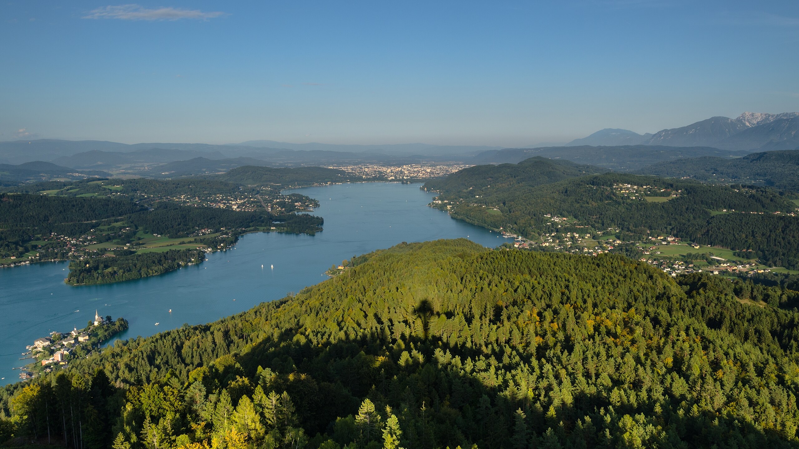
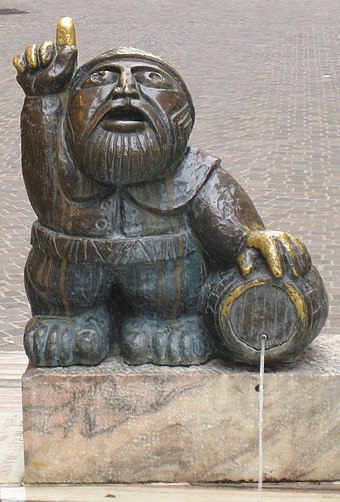

Lake Wörth
Right next to the city is Lake Woerth (Wörthersee in German), Carinthia's largest lake and one of the warmest alpine lakes.

A tale tells of the lakes' creation, when the inhabitants of a city in its basin were having too good of a time the day before Easter. Disgusted by the people dancing and laughing, a small, bearded man came, warning them of grave consequences should they not calm down before midnight. When that didn't happen, he opened his small casket and water leaked out of it until the entire lake basin was filled and the people had drowned. A statue in Klagenfurt references this tale.
